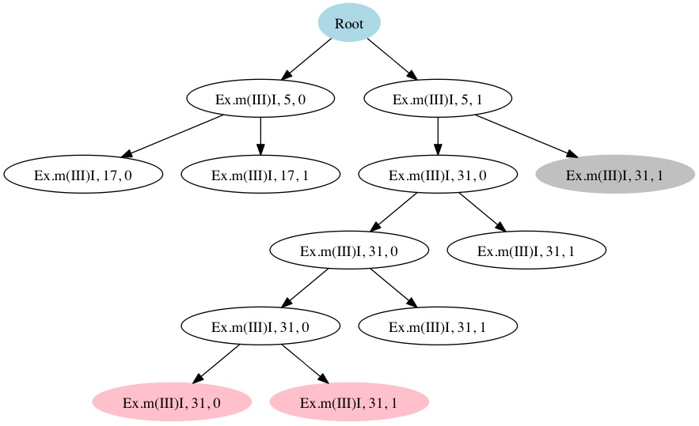
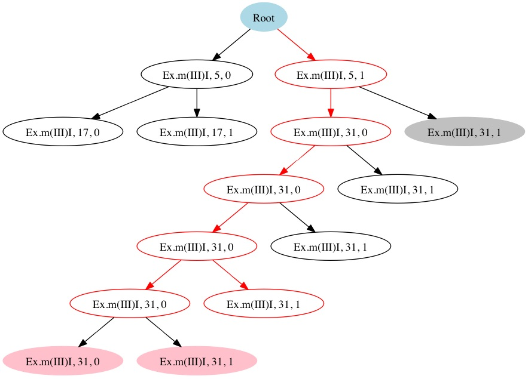

Memoise is a tool that supports memoized symbolic execution. It uses a trie-based data structure that stores the key elements of a run of symbolic execution. By maintaining the trie, it reuses previously computed results of symbolic execution during successive runs, without the need for re-computing them as is traditionally done.
By Guowei Yang,
Sarfraz Khurshid
and Corina S. Pasareanu
35th International Conference on Software Engineering, Formal Demonstrations Track
pages 1343--1346, San Francisco, CA, May 2013. [PDF]
By Guowei Yang,
Corina S. Pasareanu,
and Sarfraz Khurshid
International Symposium on Software Testing and Analysis
pages 144--154, Minneapolis, Minnesota, USA, July, 2012. [PDF]
mkdir ~/projects/jpf cd ~/projects/jpf hg clone http://babelfish.arc.nasa.gov/hg/jpf/jpf-core
mkdir ~/projects/jpf cd ~/projects/jpf hg clone http://babelfish.arc.nasa.gov/hg/jpf/jpf-symbc
jpf.home = ${user.home}/projects/jpf
jpf-core = ${jpf.home}/jpf-core
jpf-symbc = ${jpf.home}/jpf-symbc
jpf-memoise = ${jpf.home}/jpf-memoise
extensions=${jpf-core},${jpf-symbc},${jpf-memoise}
We envision many applications that can be optimized using memoized symbolic execution. For now our implementation of Memoise supports three representative applications: iterative deepening, regression analysis, and heuristics-guided symbolic execution. Here, we use iterative deepening as an example to illustrate how to use of Memoise.
First, an initial run of Memoise builds the trie on-the-fly and saves it on the disk for future re-use. The following shows an example .jpf configuration:
target=Ex
classpath=${jpf-memoise}/build/examples
symbolic.method=Ex.m(sym#sym#sym)
search.depth_limit=6
listener=gov.nasa.jpf.memoise.listener.TrieBuilder
memoise.new_trie_name=trie_ex.dat
Same as other .jpf configurations used for running symbolic execution with Symbolic PathFinder, this configuration specifies the target class and its classpath, the method which is intended to be executed symbolically, and search depth bound in the first four lines. The fifth line specifies the TrieBuilder listener which builds the trie on the fly and stores the trie to the disk. The last line specifies the name of trie.
After running Memoise, a trie like the following is generated:
|  |
| Figure 1, Initial Trie. |
The grey node in Figure 1 is an unsatisfiable node due to the unsatisfiable path condition, and the two pink nodes are leaf nodes because of the chosen depth bound.
Now, suppose the user would like to increase the depth bound to check more behaviors. The following is the configuration using Memoise:
target=Ex
classpath=${jpf-memoise}/build/examples
search.depth_limit=7
symbolic.method=Ex.m(sym#sym#sym)
listener=gov.nasa.jpf.memoise.listener.IDListener
memoise.old_trie_name=trie_ex.dat
memoise.new_trie_name=trie_ex_new.dat
Here, the listener IDListener_p is applied. It guides symbolic execution to explore the new parts because of the increased depth bound, and updates the trie accordingly. The last two lines specify the name of the trie for reuse and the name of the updated trie, respectively.
After running Memoise, an updated trie like the following is generated:
|  |
| Figure 2, Updated Trie. |
Figure 2 shows that only nodes (paths) highlighted in red color are explored guided by the old trie, The others that also exist in the old trie are just pruned during the search. The two new boundary nodes are generated because of the increased depth bound, and thereby the tire is updated.
The following six example programs are used in the experiments we conducted to evaluate our proposed approach, with respect to the time and memory cost incurred by building, storing and retrieving the trie and the savings that can be achieved with Memoise.
Looping programs pose particular challenges to symbolic execution and handling them efficiently is an active area of research.
The LoopExample.java has been used in previous work on loop analysis, where test inputs are generated to exercise the two specific statements. The TwoLoopExample.java is similar, except that the part after the first loop is another loop, instead of a simple conditional statement.
The bank account example has been used previously to illustrate method sequence generation using symbolic execution and evolutionary testing. The example implements a bank account service.
Wheel Brake System (WBS) is a synchronous reactive component from the automotive domain. This method determines how much braking pressure to apply based on the environment. The Java model is based on a Simulink model derived from the WBS case example found in ARP 4761. The Simulink model was translated to C using tools developed at Rockwell Collins and manually translated to Java. It consists of one class and 231 lines of code.
Traffic Anti-Collision Avoidance System (TCAS) is a system to avoid air collisions. Its code in C together with 41 mutants are available at SIR repository. We manually converted the code to Java. The Java version has 143 lines of code.
The original version v0 and three randomly selected mutant versions v6, v25, and v30 are used in our study. Compared to the original version v0, version v6 has an operator change from “<” to “<=”, v25 has an operator change, and v30 has a return value change.
MerArbiter models a component of the flight software for NASA JPL’s Mars Exploration Rovers (MER). The analyzed software consists of a Resource Arbiter and several user components. Each user serves one specific application, such as imaging, controlling the robot arm, communicating with earth, and driving. The arbiter module moderates access to several shared resources. It prevents potential conflicts between resource requests coming from different users and it enforces priorities. For example, it does not make sense to start a communication session with Earth while the rover is driving.
MerArbiter has been modeled in Simulink/Stateflow and it was automatically translated into Java using the Polyglot framework. The configuration for our analysis involved two users and five resources. The example has 268 classes, 553 methods, 4697 lines of code (including the Java Polyglot execution framework).
There were no version histories available for MerArbiter. We randomly picked two methods from the original version v0, and manually introduced the changes. Version v1 has a change to the return value in the method guard of class Transition300, and version v2 has an operator change from “==” to “! =” in the method guard of class Transition186.
The Apollo Lunar Autopilot is a Simulink model that was automatically translated to Java. The translated Java code has 2.6 KLOC in 54 classes. The Simulink model was created by an engineer working on the Apollo Lunar Module digital autopilot design team. The goal was to study how the model could have been designed in Simulink, if it had been available in 1961. The model is available from MathWorks6. It contains both Simulink blocks and Stateflow diagrams and makes use of complex Math functions (e.g. Math.sqrt). The code has been analyzed before using Symbolic Pathfinder with the Coral solver.